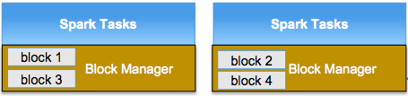
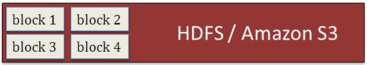
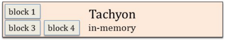
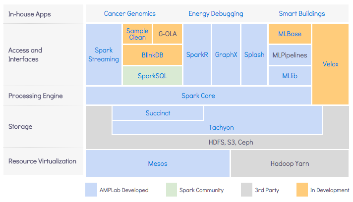
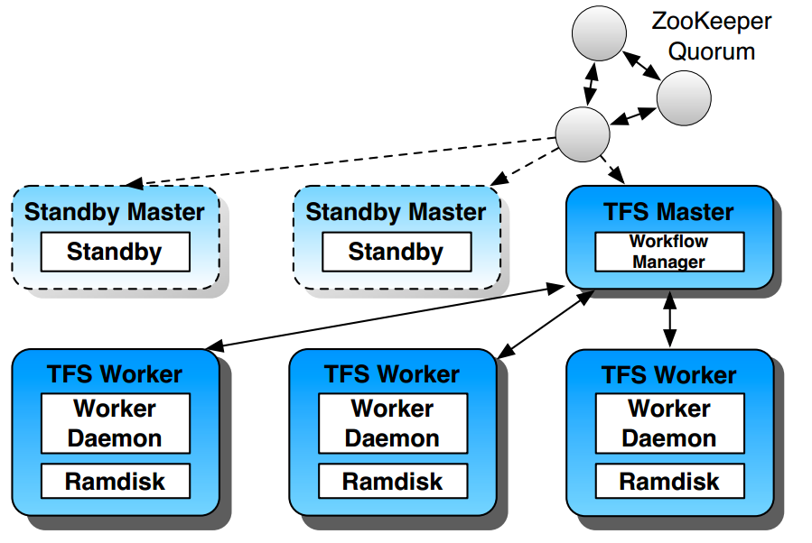
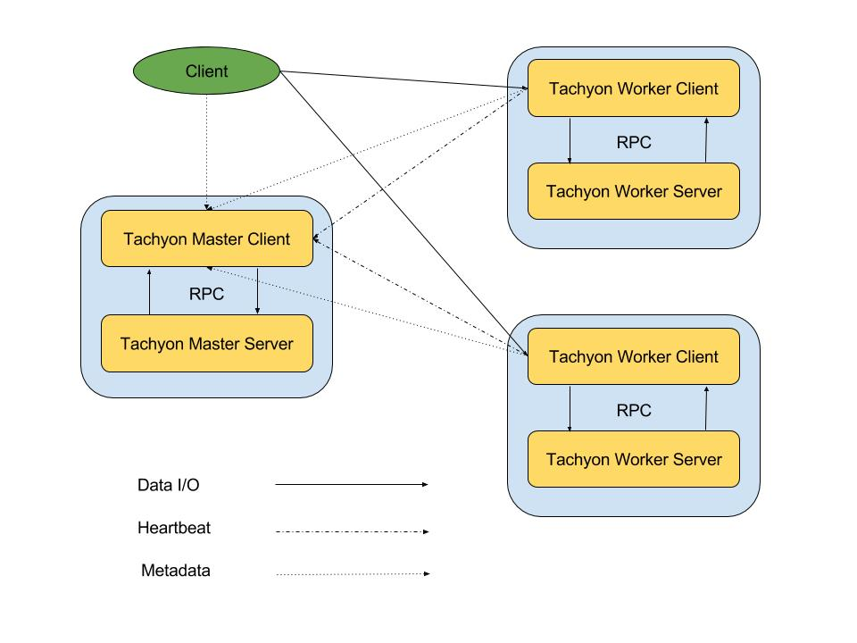
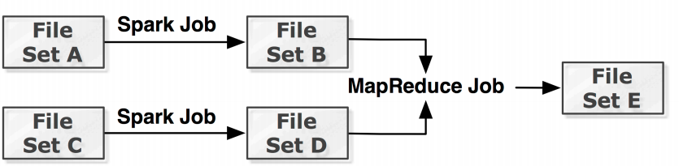
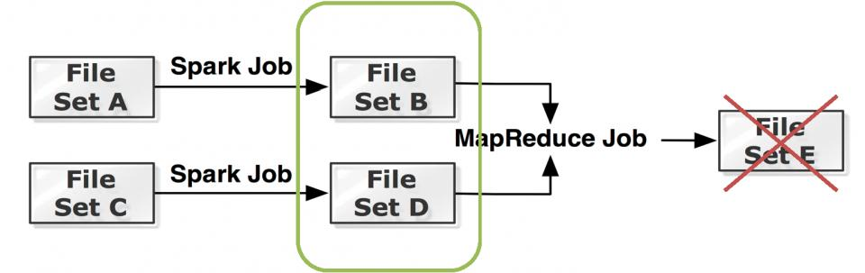
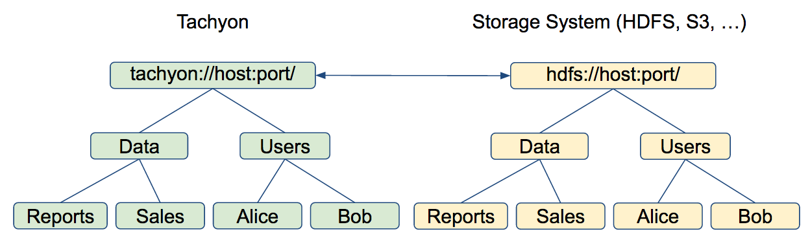

Enabling Fast Data using in memory-centric computing with Tachyon
ex. spark memory management

Execution engine
Storage engine
Temporary data and block manager are in the same process
GC involved in both of them
Share data between jobs using fs

ex. spark off_heap storage
Execution engine
Storage engine
Execution engine and storage engine are different process
GC involved only in execution engine
Share data between jobs using Tachyon at memory speed

ex. spark off_heap storage
def persist(newLevel: StorageLevel): this.type
class StorageLevel private(
private var _useDisk: Boolean,
private var _useMemory: Boolean,
private var _useOffHeap: Boolean,
private var _deserialized: Boolean,
private var _replication: Int = 1)
testRdd.persist(StorageLevel.OFF_HEAP)
Tachyon
“Tachyon is a memory-centric distributed storage system
enabling reliable data sharing at memory-speed across cluster frameworks.”
AmpLab BDASS
“BDAS, the Berkeley Data Analytics Stack, is an open source software stack that integrates software
components being built by the AMPLab to make sense of Big Data.”
AmpLab BDASS

Tachyon architecture

##Master
- responsible for managing the global metadata of the system, for example, the file system tree.
- Clients endpoint for reading or modifying this metadata.
- all workers periodically heartbeat to the master to maintain their participation in the cluster.
- The master does not initiate communication with other components; it only interacts with other components by responding to requests.
##Worker
- responsible for managing local resources allocated to Tachyon.
These resources could be local memory, SSD, or hard disk and are user configurable.
- store data as blocks and serve requests from clients to read or write data by reading or creating new blocks.
However, the worker is only responsible for the data in these blocks; the actual mapping from file to blocks is only stored in the master.
##Client
- provides users a gateway to interact with the Tachyon servers.
- exposes a file system API. It initiates communication with master to carry out metadata operations
and with workers to read and write data that exist in Tachyon.
Data that exists in the under storage but is not available in Tachyon is accessed directly through an under storage client.
Tachyon architecture

##Storage types
- Tachyon Storage
- multi layer (tiered storage) for storing user files
- may be volatile
- accessible by schema tachyon://[path]
- Underfs storage: 3rd party file system used for persisting tachyon journal, lineage and eventually for sync user files
##write types
- MUST_CACHE: Write the file to Tachyon storage or failing the operation.
The data will be written to the highest tier in a worker's storage.
Data will not be persisted to the under storage.
- CACHE THROUGH: Write the file synchronously to the under fs,
and also try to write to the highest tier in a worker's Tachyon storage.
- THROUGH: Write the file synchronously to the under fs, skipping Tachyon storage.
- ASYNC_THROUSH: Write the file asynchronously to the under fs.
##Tiered Storage
- Tachyon supports tiered storage, which allows Tachyon to manage other storage types in addition to memory.
Using Tachyon with tiered storage allows Tachyon to store more data in the system at once,
since memory capacity may be limited in some deployments.
- With tiered storage, Tachyon automatically manages blocks between all the configured tiers, so users and administrators do not have to manually manage the locations of the data. Users may specify their own data management strategies by implementing allocators and evictors. In addition, manual control over tier storage is possible, see pinning files.
##Writing Data
When a user writes a new block, it is written to the top tier by default (a custom allocator can be used if the default behavior is not desired). If there is not enough space for the block in the top tier, then the evictor is triggered in order to free space for the new block.
##Reading Data
Tachyon will simply read the block from where it is already stored. If Tachyon is configured with multiple tiers, then the block will not be necessarily read from the top tier, since it could have been moved to a lower tier transparently.
Reading data with the TachyonStorageType.PROMOTE will ensure the data is first transferred to the top tier before it is read from the worker. This can also be used as a data management strategy by explicitly moving hot data to higher tiers.
##Lineage
Tachyon can achieve high throughput writes and reads, without compromising fault-tolerance by using Lineage
- lost output is recovered by re-executing the jobs that created the output.
- applications write output into memory, and Tachyon periodically checkpoints the output into the under file system in an asynchronous way.
In case of failures, Tachyon launches job recomputation to restore the lost files.
Lineage assumes that jobs are deterministic.
lineage


##Lineage API
```
TachyonLineage tl = TachyonLineage.get();
// input file paths
TachyonURI input1 = new TachyonURI("/inputFile1");
TachyonURI input2 = new TachyonURI("/inputFile2");
List inputFiles = Lists.newArrayList(input1, input2);
// output file paths
TachyonURI output = new TachyonURI("/outputFile");
List outputFiles = Lists.newArrayList(output);
// command-line job
JobConf conf = new JobConf("/tmp/recompute.log");
CommandLineJob job = new CommandLineJob("my-spark-job.sh", conf);
long lineageId = tl.createLineage(inputFiles, outputFiles, job);
```
Transparent Naming
Transparent naming maintains an identity between the Tachyon namespace and the underlying storage system namespace.

##Transparent naming
- object paths are preserved.
if a user creates a top-level directory Users with subdirectories Alice and Bob, the directory structure and naming is preserved in the underlying storage system (e.g. HDFS or S3)
- Tachyon transparently discovers content present in the underlying storage system which was not created through Tachyon. For instance, if the underlying storage system contains a directory Data with files Reports and Sales, all of which were not created through Tachyon, their metadata will be loaded into Tachyon the first time they are accessed
Unified Namespace
- Tachyon provides a mounting API that makes it possible to use Tachyon to access data across multiple data sources.
##Tachyon shell
- provides basic file system operations (ls, rm, cat, mv, tail, touch etc.)
- provides "special" operation
- persist: persists data from Tachyon storage to the under fs
- pin / unpin: marks / unmarsk a file or folder as pinned in Tachyon (i.e. no eviction will be applied)
- load: load data from under storage into Tachyon storage
- report: marks a file as lost to the Tachyon master. Marking a file as lost will cause the
master to schedule a recomputation job to regenerate the file.
##Remote Write support
```
$ java -cp
SW/tachyon-0.8.2/assembly/target/tachyon-assemblies-0.8.2-jar-with-dependencies.jar
-Dtachyon.master.hostname=backpressure-master
tachyon.shell.TfsShell copyFromLocal icla.pdf /
```
demo report lineage
#Q & A ?
#THANK YOU!